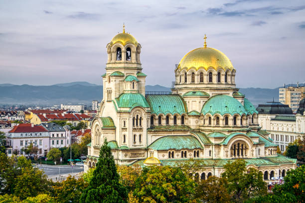

 The main cathedral of Sofia and Bulgaria generally stands on Alexander Nevsky Square and strikes the imagination with its complex architecture and impressive appearance. This considerable cathedral can simultaneously accommodate up to five thousand believers. It was erected in honour of the liberation of Bulgaria during the Russian-Turkish war: the first stone was laid in 1882, but the construction itself began in 1904. This process lasted eight years, and in 1912 the temple was consecrated. In 1944, during the bombing, the temple was seriously damaged, but it was restored precisely. Russian masters constructed the temple, and the St. Petersburg architect, professor of the Academy of Arts A. Pomerantsev, became the author of the architectural project. The church's main altar is dedicated to St. Alexander Nevsky, the northern aisle - is in the name of St. Cyril and Methodius, and the southern one in the name of St.Tsar Boris. The Alexander Nevsky Cathedral is the modern residence of the Patriarch of the Orthodox Church of Bulgaria and the prominent Christian attraction of Sofia. The temple occupies the central part of a vast square, named after the ancient Russian prince and great commander. This is the largest Orthodox cathedral in the Balkans after the Serbian one (Belgrade). More than five thousand parishioners can attend services at the same time. The construction of the temple is based on a patriotic idea. Bulgaria gained the desired freedom from the Ottoman Empire. It was decided to perpetuate this event by erecting a monastery of God in the centre of Sofia. In 1882, a temple was founded in the highest place in the city. Construction took place from 1904 to 1912. In 1915, the temple was renamed. Now, it was the Cathedral of Cyril and Methodius. In this regard, the memorial plaques and the location of the icons were replaced. But in 1920, the temple was returned to its former name. Four years later, the Alexander Nevsky Cathedral was declared a cultural monument. In 1944, the temple was heavily damaged by military operations. Since 1951, after restoration, the residence of the patriarchs of the Bulgarian Orthodox Church has been located here. The Alexander Nevsky Cathedral also has cinematic experience. So, in the film “Hitman”, he “played the role” of a Moscow temple, and in “Ninja” - a temple in Vladivostok.